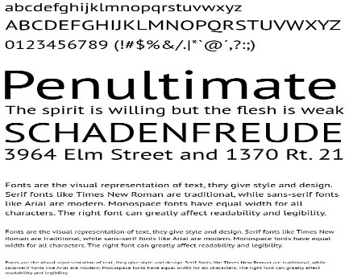

Font Populer
Berikut disajikan 10 font populer beserta penjelasan dan contoh tampilan:
Roboto
Font sans-serif modern dengan desain geometris yang seimbang; cocok untuk antarmuka digital dan presentasi konten karena keterbacaannya dan nuansa futuristiknya.
Open Sans
Font ini menawarkan kesederhanaan dan kejelasan visual, banyak digunakan dalam aplikasi web dan mobile. Desainnya yang bersih membuatnya ideal untuk konten yang informatif.
Lato
Memiliki karakter yang hangat dan bersahabat, Lato sering digunakan untuk brand corporate maupun media digital, dengan keseimbangan antara keformalitasan dan kreativitas.
Montserrat
Terinspirasi dari tipografi urban, Montserrat menonjol dengan bentuk yang modern dan berani, sehingga cocok digunakan untuk judul, logo, dan poster digital.
Raleway
Sebuah font sans-serif elegan dengan garis tipis, ideal untuk desain minimalis dan presentasi informasi yang estetik.
Merriweather
Font serif yang dirancang khusus untuk keterbacaan pada layar digital. Kombinasi keanggunan dan kenyamanan membaca membuatnya populer dalam artikel dan publikasi online.
PT Sans
Dengan desain yang bersih dan modern, PT Sans banyak digunakan di situs web dan aplikasi, karena tampilannya yang netral dan profesional.
Source Sans Pro
Font open-source yang menawarkan fleksibilitas tinggi untuk berbagai aplikasi, dari dokumen resmi hingga aplikasi digital, dengan fokus pada kejelasan dan estetika.
Oswald
Mengadaptasi gaya tradisional sans-serif dengan sedikit sentuhan modern, Oswald cocok untuk judul dan elemen desain yang ingin menonjolkan nuansa urban.
Ubuntu
Dirancang khusus untuk sistem operasi Ubuntu, font ini memberikan kesan modern dan humanis, serta mendukung tampilan antarmuka yang ramah bagi pengguna digital.